portfolio-mobile-handoff.zip 解压后本地构建的成品站点（React 18 + Vite 5 + Tailwind v4），含桌面「复古 OS / 长页」与手机端「首访列表 / 长页 / 8 个详情页」两套界面。桌面端已经是一份完成度很高、有明确设计语言的作品集：黑白橙 + 巨型排版 + bento 网格 + 复古 OS 隐喻，详情页有六段式叙事与调研数据，工程层面还有历史栈、深链、按需加载与降载处理。
但手机端首访层与简历长页退化为「白纸 + 细线表格」，全站最核心的「产品」在两处关键首屏里几乎缺席（手机首访仅 44px 缩略图、手机长页 0 张大图、桌面详情首屏 808px 内无产品主图），加上子项目各自为政的字体/强调色、吸顶栏穿透与双返回、以及 reduced-motion 降级不彻底，把整体分数压在「良好」区间。
一句话：不是做不出高级感，而是高级感没有被一致地铺到手机端与首屏，也没有让产品成为第一主角。
本页所有分数与结论均可回溯到下方标注的证据编号（E 截图 / M 量化指标 / C 源码 / D 交互实测 / AB 对照实验）。未取证的项一律放入第八章「假设与需补充材料」，不参与扣分。
npm run build → dist/）在 headless Chrome 157 下的渲染为准，未使用线上版本。| # | 维度 | 权重 | 考察点 | 主要依据类型 |
|---|---|---|---|---|
| 1 | 视觉风格 | 18 | 色彩系统与对比、字体家族与字阶、跨页面/跨项目一致性、品牌识别度 | E 截图 / M 颜色字体频率 / C 令牌 |
| 2 | 交互操作 | 16 | 导航可发现性、状态反馈、返回/历史、搜索筛选、触控易用性、学习成本 | D 点击实测 / C 状态机 / M 触控目标 |
| 3 | 版式排版 | 16 | 网格系统、间距节奏、信息层级、对齐、遮挡与溢出、字阶跨度合理性 | E 截图 / M scrollWidth / M 字号分布 |
| 4 | 内容呈现 | 20 | 项目说明完整度、重点是否突出、叙事是否闭环（问题→过程→验证→结果） | C 数据字段 / M 字数 / E 章节截图 |
| 5 | 画面展现 | 18 | 图像质量、裁切与适配、首屏产品占比、视觉冲击力 | E 截图 / M object-fit 与自然尺寸 |
| 6 | 技术实现与性能补充 | 6 | 构建健康度、拆包与按需加载、资源体积、外链依赖风险、动效降载 | M 构建/资源 / C 配置 |
| 7 | 无障碍与包容性补充 | 6 | 语义标题、替代文本、触控尺寸、最小字号、prefers-reduced-motion 落实 | M DOM / AB 对照实验 / C 组件 |
| 合计 | 100 | 五个必评维度占 88 分，补充维度占 12 分 | ||
| 百分制 | 判定标准 |
|---|---|
| 90–100 | 行业标杆：系统完整、无实质缺陷，可直接对外发布并在同类作品中形成辨识度 |
| 80–89 | 优秀：整体成熟，仅有个别不影响理解的优化项 |
| 70–79 | 良好：主要目标达成，存在明确、可定位、可修复的短板 |
| 60–69 | 合格：基本可用，但关键体验（首屏/主内容/主路径）有明显缺口 |
| 40–59 | 待改进：多处影响理解或转化，需要结构性重做 |
| <40 | 不合格：核心信息无法有效传达 |
E 视觉 本机截图，编号 E01–E16，见第五章画廊。
M 量化 DOM 计算样式、字号/颜色频率、图片自然尺寸与 object-fit、scrollWidth、触控尺寸、资源统计。
C 源码 具体文件与行号，例如 src/index.css:38-55。
D 交互 真实点击、输入、滚动后的状态。
AB 对照 独立会话在同一视图状态下的开关对照。
naturalWidth=0 多来自未进入视口的 loading="lazy"；滚动后 fig26.webp 由 0×0 变为 558×418（M16），证明加载正常。alt="" 不扣分：首访层 8 张缩略图所在按钮已有文字标签（C8），符合读屏去重做法；详情页缺 alt 另需区分装饰图，列为待复核。| 维度 | 权重 | 桌面分 | 手机分 | 加权得分条形 | 维度得分 | 折合百分 |
|---|---|---|---|---|---|---|
| 1 视觉风格 | 18 | 86 | 69 | 14.1 / 18 | 78.4 | |
| 2 交互操作 | 16 | 84 | 78 | 13.0 / 16 | 81.3 | |
| 3 版式排版 | 16 | 84 | 75 | 12.8 / 16 | 80.0 | |
| 4 内容呈现 | 20 | 78 | 68 | 14.7 / 20 | 73.5 | |
| 5 画面展现 | 18 | 75 | 64 | 12.6 / 18 | 70.1 | |
| 6 技术实现与性能 | 6 | 80（不拆端） | 4.8 / 6 | 80.0 | ||
| 7 无障碍与包容性 | 6 | 60（不拆端） | 3.6 / 6 | 60.0 | ||
| 总分 | 100 | 81.2 | 70.5 | 14.1+13.0+12.8+14.7+12.6+4.8+3.6 | 75.6 | 75.6 |
计算示例（视觉风格）：(86×0.55 + 69×0.45) / 100 × 18 = 14.10。桌面 81.2 与手机 70.5 为前五个维度按权重归一后的分数；总分再把 88 分的五大维度与 12 分的补充维度相加。
src/index.css:38-55 定义 #FCFCFC 纸白 / #151515 近黑 / #E67E33 橙 / #E3E3E3 分度线 / 1rem 圆角；实测文本色频率 rgb(21,21,21) 334 次、橙色 96 次，说明不是写在文档里而是全站真在用 M4。CRAFTING 超粗体 + Experiences 斜体 + 橙色大圆 + 轮廓字，形成强烈记忆点。Inter 139 处、07 有 Helvetica Neue 141 处与 ui-monospace 70 处、07 强调色为 #FF5B2E 而非全局 #E67E33，08 引入冰蓝 + 深红；项目内成立，跨项目浏览时品牌被稀释。扣 1.4 分。Experiences 横跨橙色圆、轮廓字 DESIGN 在 808px 处被切断；E06 巨型 concept. 下缘被下方大图叠压。扣 1.0 分。index.css:9-62）。01 ·《心景》疗愈灯具 标签，窗口内容可滚（os-window-body scrollHeight 554 / client 383）。App.jsx:420-599 把长页/胶片/详情/弹窗统一压进 history.state.yhStack，安卓返回键与 iOS 侧滑先关浮层再离站；App.jsx:1211-1230 支持 #p=01 深链单项目分享，Escape 关闭弹窗。App.jsx:2421-2495），不是装饰输入框。scrollWidth=414 无横向溢出；可见可点元素 9/26/63/32 个中 <44×44 的数量均为 0；C8 首访层「一行 = 进详情 / 底部按钮 = 进简历」单一动作映射，学习成本极低。#projects，用户很可能以为输入没生效。扣 1.2 分。TOP 40×14；指针操作无碍，触屏笔记本/平板会偏小。02 CORE HIGHLIGHTS / 核心亮点 → 03 USERS & SCENES / 目标用户与场景，中英双标签 + 细分割线，长页滚读不迷路；E14 手机长页用 SEC.03 / SEC.04 / SEC.05 延续同一套语言。index.css:77-81 scroll-margin-top:88px，长页另有 78px 覆盖（交接文档 §四.5）。CAT × ICE 标签与另一行小字重叠。扣 1.6 分。H1，语义层级与视觉层级不一致。扣 0.8 分（正文主字号 15/16px 达标，此项只针对标签与语义，不重复扣正文）。App.jsx:806-1199 8 个项目各有 overview / targetUsers / concept（部分还有 cmf / interaction）与 chartData，例如 01 的「72.25% 受访者偶尔感到孤独 / 73.68% 偏好柔和暖光」直接把调研写进叙事 E05 的 73%、209 Survey Samples 数据卡。HIGHLIGHTS → USERS → PROCESS → SYSTEM → MATERIAL → ITERATION，E12 对应 02 CORE HIGHLIGHTS、03 USERS & SCENES；手机端浮层内部 scrollHeight 达 8445 CSS px、正文 2785 字（01）/3685 字（07）/2883 字（08），且折叠默认全展开 M11E11。App.jsx:772-793 写到「概念验证周期 7 天 → 3 天」「3 套可落地外观方案」「5 套完整方案」「创意产出效率 +40%」「30+ 概念草图」「12 类应用场景」「比赛奖项通过」，不是空泛职责描述。result / impact / verification 一类结果字段；详情页展示的是调研数据与方案推演，看不到「是否打样、是否落地、用户反馈、迭代前后对比、个人复盘」。对设计岗评审，这是最影响说服力的一项。扣 2.6 分。App.jsx:2173-2184 明确是为避免与首访列表重复而做的有意取舍，但代价是：从「简历与能力」进来的访客看不到任何作品，必须再点一次「列表」。扣 1.4 分。concept. 与一句概念短语。扣 1.0 分。_fig20-backup-prototype.webp 1500×1443、场景图 1376×768、IP 展板清晰；E08 手机 01 首屏 412×340 的白色模块化灯具渲染、E10 08 的猫冰主形象、E13 OS 窗口内的暖光场景图都具备成品级观感。object-fit: contain；08 页 29/46 张图为 contain（占比最高），符合交接文档「产品本体不得裁切/变形」的硬约束；实测无 object-fit: fill 导致的变形（deformed=0）。cover、手机 07 为 28/41、桌面 01 为 12/17；M8 典型样例 scene-01.jpg 1376×768（1.79）被塞进 330×116（2.85）的横条，纵向约 37% 画幅被裁掉，且未见 object-position 语义化配置。扣 1.6 分。concept. 下缘被大图叠压、产品上的字样被画框切断。扣 1.0 分。README.md §四）。@media (prefers-reduced-motion: reduce) 规则（共 72–73 条 media 规则）。index.html:38-42 从 Google Fonts 加载 5 个家族（Oswald / JetBrains Mono / Noto Sans SC / Noto Serif SC / Instrument Serif），实测 document.fonts 已加载 face 89–151 个；弱网、内网或被墙时会出现回退与首屏字移，且无自托管/子集化。扣 0.8 分（风险项，本次未做弱网实测，不加重扣罚）。index.html:38-42、vite.config.js:23-31、README.md §四。alt="" 去重属正确做法。prefers-reduced-motion: reduce 后，运行中的动画元素 24 → 17、带 transition 的元素 199 → 174，说明降级链路确实生效了一部分。.bento-detail-root 均存在、正文均 2785 字）：reduce 下仍有 17 个运行动画，残留样本是 animate-pulse（2s 呼吸），且 transform ≠ none 的元素数 10 → 10 没有下降，与交接文档「关闭位移/缩放」硬约束不符。扣 1.2 分。role="dialog" aria-modal="true"（MobileProjectList.jsx:11）——它是主入口而非模态框；桌面同一文档存在 2 个 H1，叠加浮层后共 4 个 H1。扣 0.9 分。alt。扣 0.3 分（其中「是否为装饰图」尚未逐张判定，不加重扣罚，列为需补充材料）。为避免因会话状态不同得出假结论，两次均使用全新独立标签页、同一 URL（/?plain=0#p=01）、同一 414×896/DPR2 视口、等待 5s，确认两次 .bento-detail-root 均存在且正文同为 2785 字后，再统计计算样式：
| 指标 | no-preference | reduce | 判读 |
|---|---|---|---|
| 运行中动画元素数 | 24 | 17 | 减少 7 个，但仍有残留（animate-pulse） |
| transitionDuration > 0 的元素数 | 199 | 174 | 减少 25 个 |
| transform ≠ none 的元素数 | 10 | 10 | 未下降，位移/缩放未被完全关闭 |
| 详情页是否打开 / 正文字数 | 是 / 2785 | 是 / 2785 | 两次视图状态一致，对照有效 |
no-preference 在相同操作下也同样打不开（App.jsx:1211-1230 的深链只在首次挂载 / hash 变化时触发），因此与 reduced-motion 无关，属于测试方式问题，未计入任何扣分。此处记录以保持判定链可追溯。点击缩略图可查看原尺寸截图。文件名与 review-assets/ 中文件一致；原始量化数据在 .workbuddy/tmp/evidence/metrics.json、audit2.json、audit3.json。
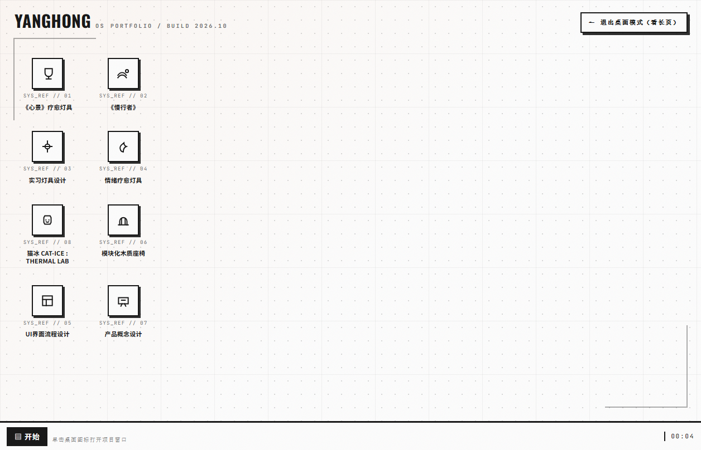
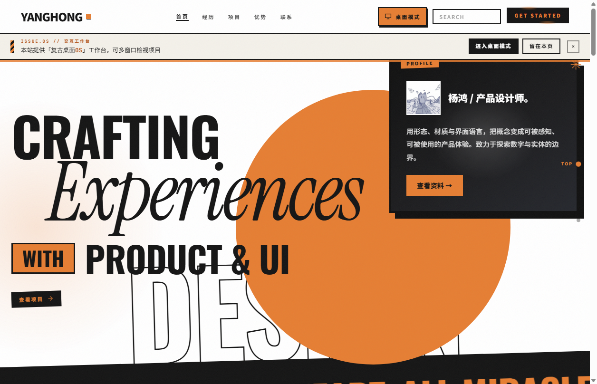
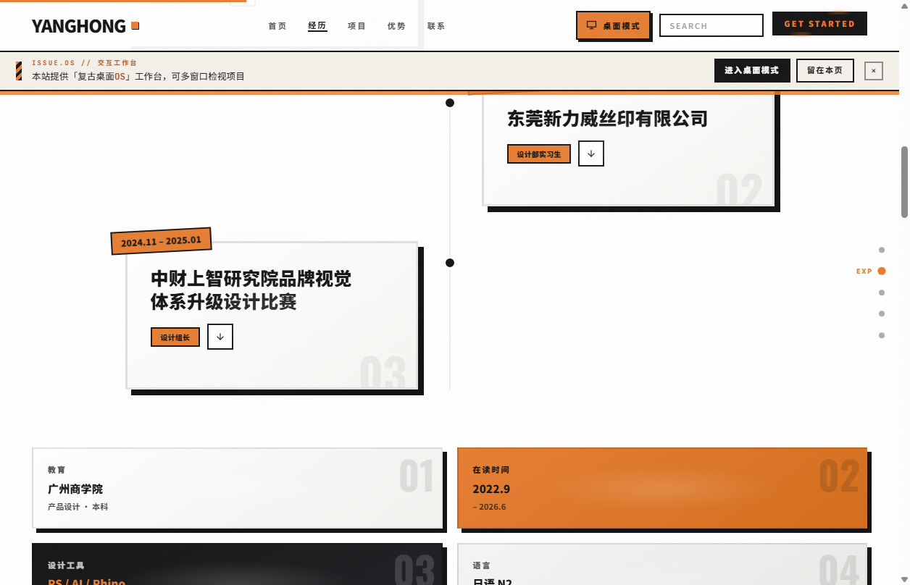
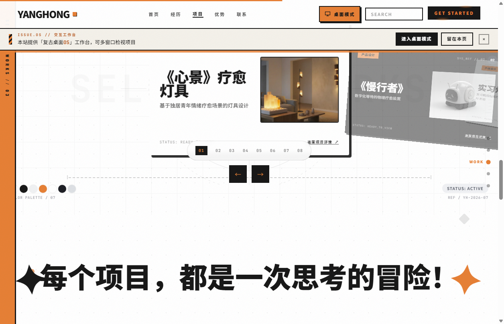
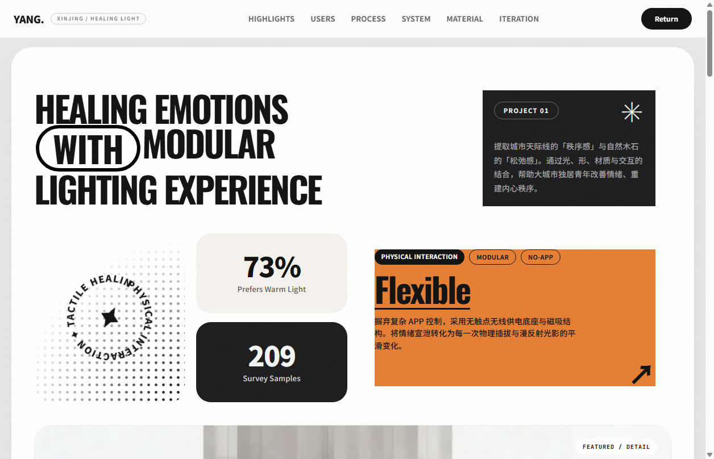
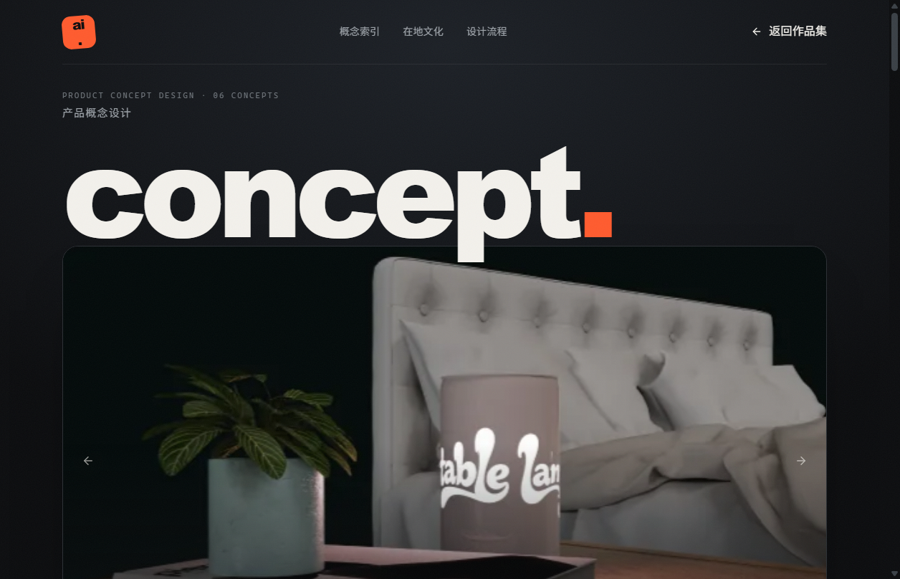
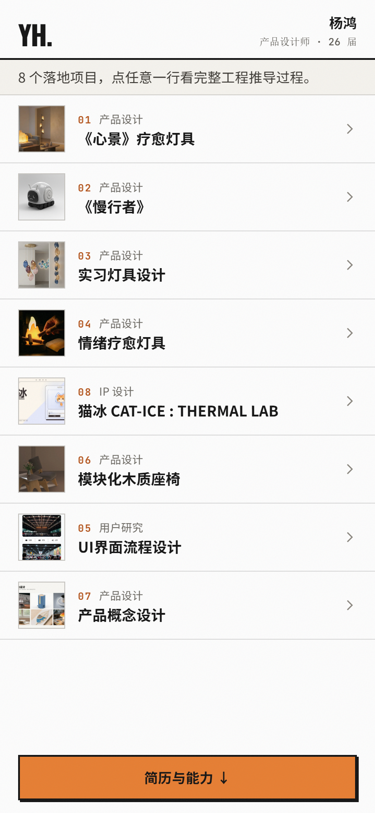
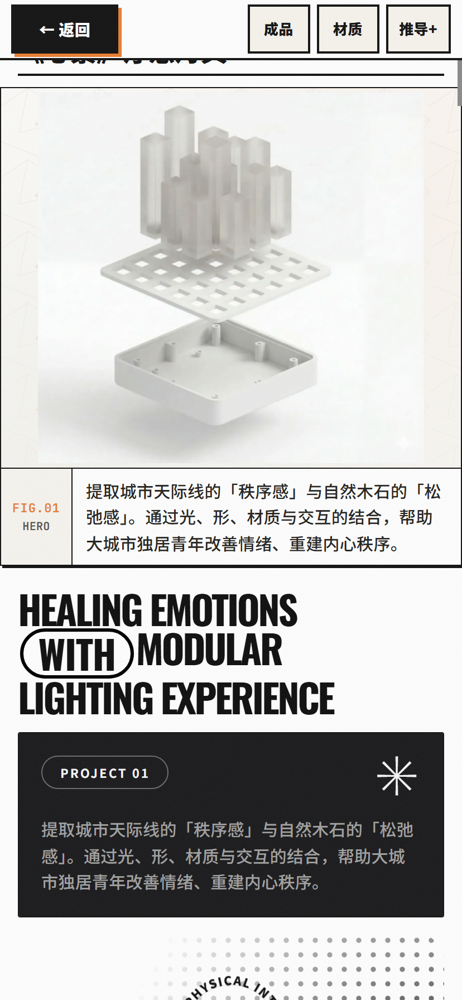
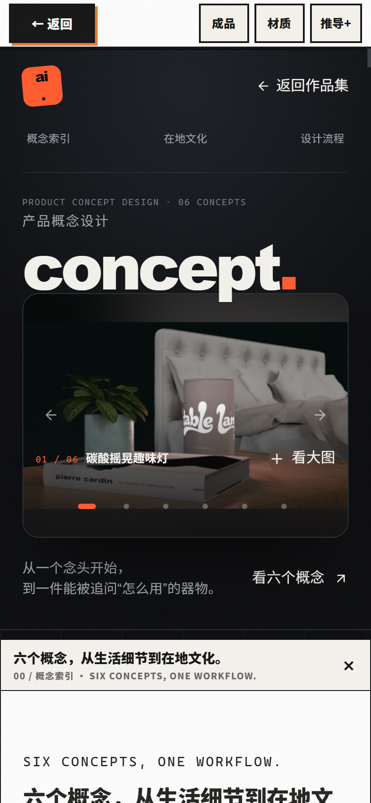
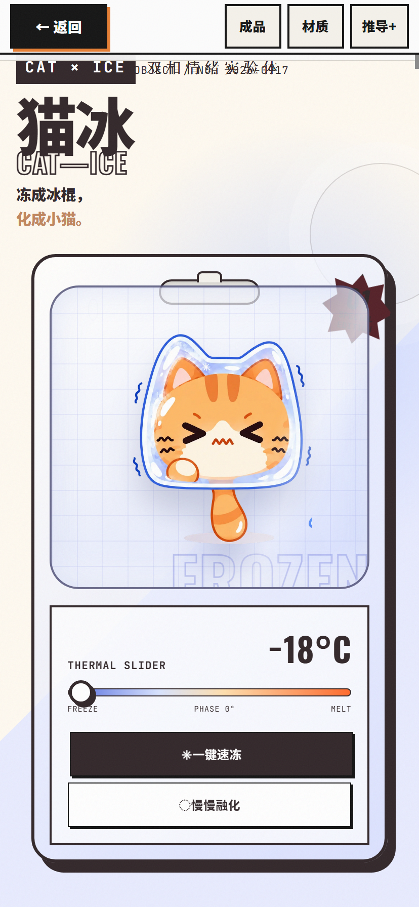
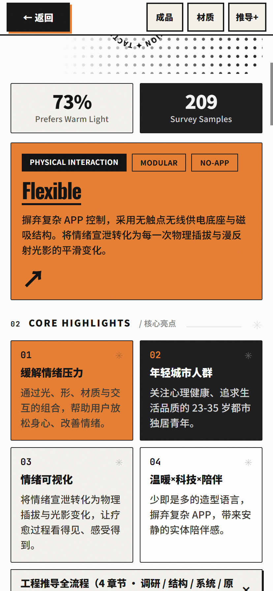
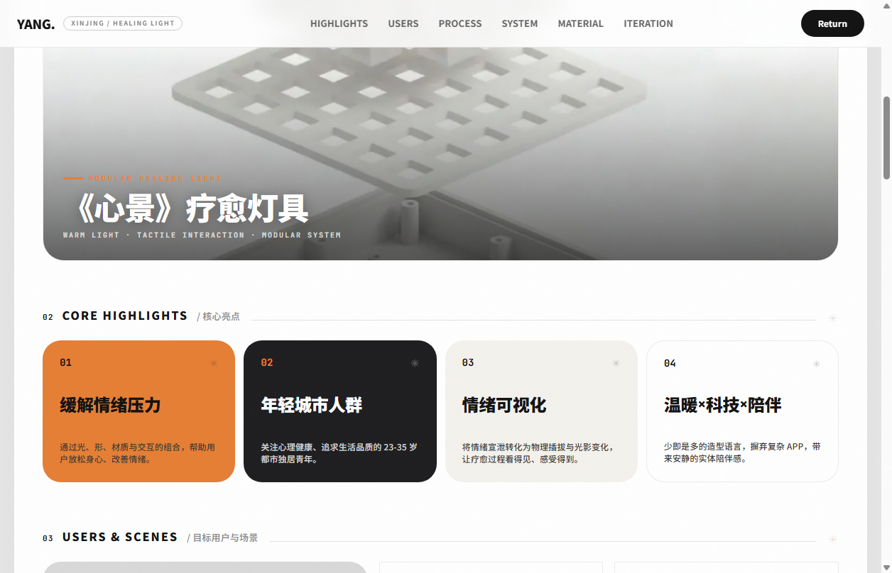
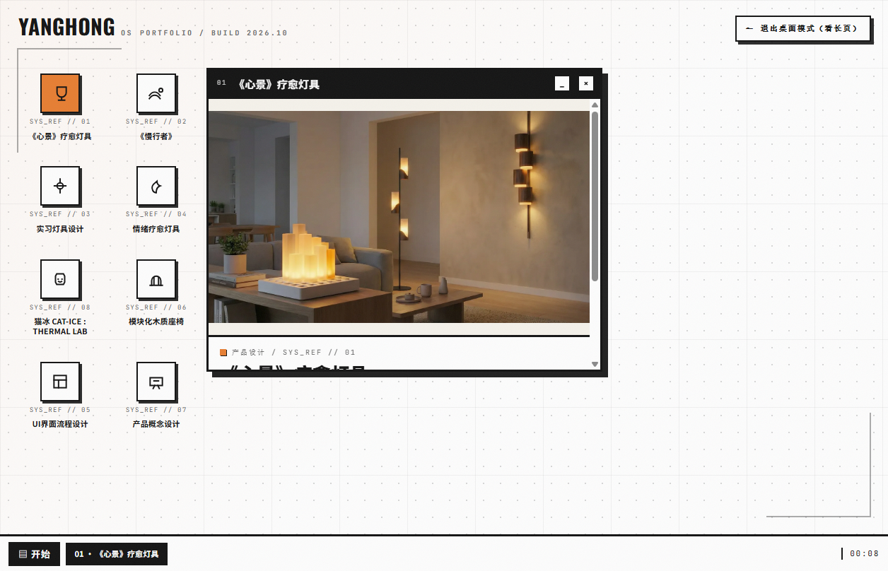
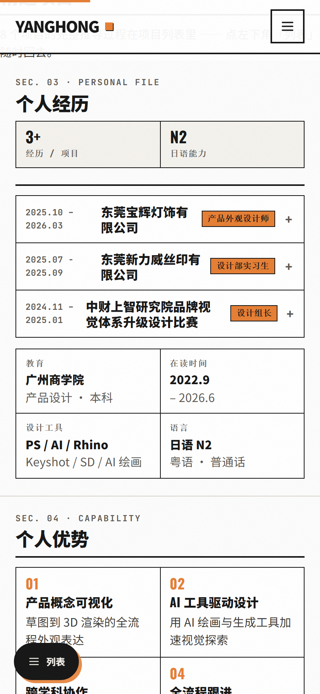
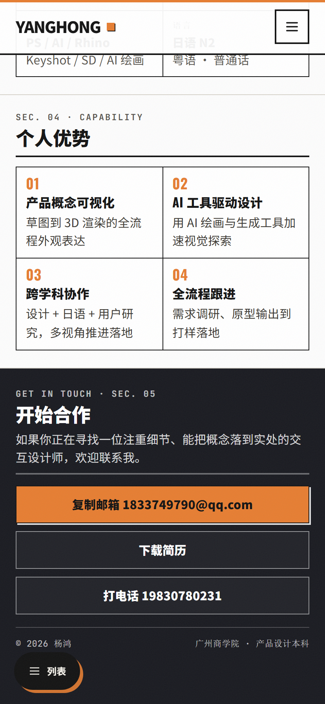
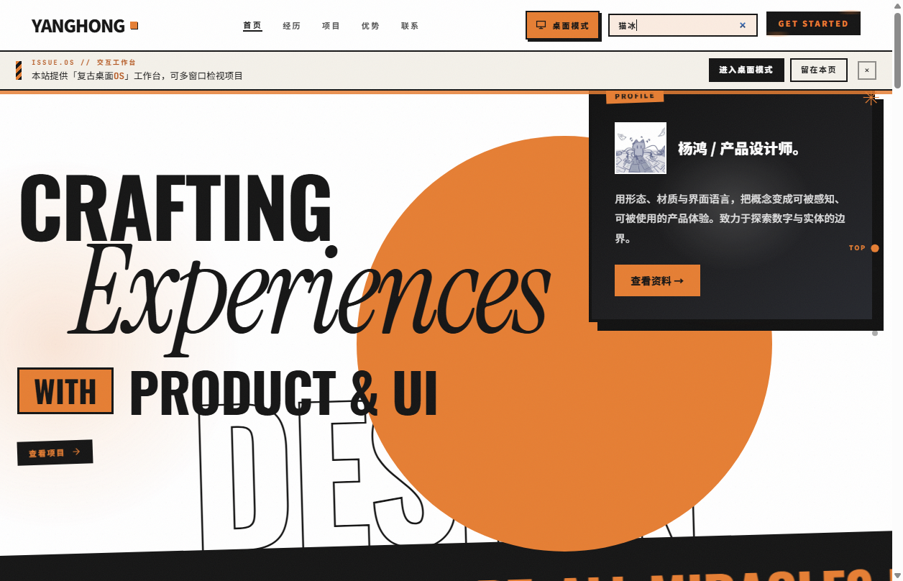
「预期改善」为评审估算，非实测结果；每项都给出可复测的验证口径。优先级按「对总分与观感的影响 ÷ 改动成本」排序。
问题：E07 一屏 8 行同质列表，无 Hero、无品牌图形，产品只有 44px 缩略。
动作：在 ≤1023px 的 .ms-overlay 顶部加一块 220–280px 的品牌区，复用桌面已有资产（Oswald 巨型 YH. / 橙圆或半调网点 / 深色引言条），并在其中放 1 张 300px 以上的当期主推产品渲染（object-fit: contain）；列表保留但改为「2 列大图卡 + 前 2 项优先」，或至少把首行做成大卡。不要动产品原图文件。
scrollWidth ≤ 414、可点元素仍 100% ≥44px。问题：E05 首屏被标题、数据卡、引言卡占满，E12 产品宽幅图在滚动约 820px 后出现。
动作：调整 .bento-detail-root 首屏网格——把巨型标题压缩到 2 行，右侧或下方 35–40% 高度给产品主图（contain），数据卡下移到第二屏；或把现有宽幅 hero 整体上移到标题之后。保持桌面 1256×808 基线 scrollHeight=6277 / scrollWidth=1256 不变。
object-fit: contain、桌面基线指标零回退。问题：C4 为避免与首访列表重复，长页只留一行指路；结果 M10 全文 552 字、0 张大图，C3 的量化成果还全部折在「+」里。
动作：不必恢复 8 个项目全量（会重复 951px），而是在 SEC.02 放 3 张精选项目大图卡（16:10、contain、各带一行「一句话成果」），并把经历卡里最有说服力的 3 条量化（7→3 天 / 5 套方案 / +40%）默认展开为可见摘要；其余仍可折叠。
>200px 图片数 ≥3。问题：E14E15 半透明顶栏透出上一行内容；E09 白顶栏压深色页且双返回；E08 顶部标题被截断；E10 标签文字重叠。
动作：顶栏背景改为不透明且由页面主题变量驱动（深底页用深底顶栏）；删除 07 页内重复的「返回作品集」；给固定顶栏高度加统一的 scroll-padding-top，并复核每个详情页首个标题的 top ≥ 顶栏高度；08 顶部两行标签改为 flex 单行或错行。
把 #E67E33 / #151515 / #FCFCFC 与「1 个 display + 1 个正文 + 1 个 mono」写进所有详情页共用的一层 CSS；07 的 #FF5B2E 与 Helvetica Neue、01 的 Inter 改为引用变量，项目专属色（如 08 冰蓝）允许作为扩展色保留但需登记。M5
fontFamily 仅出现 3 个主族，强调色统一为 1 个主色 + 登记过的扩展色。产品主图全部 contain（现状已基本达标）；把 M8 一类 330×116 横条场景图改为 contain + 固定底色，或保留 cover 但补 object-position 与构图说明；逐张判定 07 页 19/41、桌面 07 页 11/33 缺 alt 的图是装饰图还是信息图，信息图补中文描述。M7M17
object-fit: cover 比例明显下降、所有信息图 alt 非空、无 fill 变形。D2 输入后自动滚动到 #projects（或吸顶显示结果条），显示「找到 N 个项目 / 清除筛选」，并保留现有空状态。C6
C2 在 overview → targetUsers → concept 之后增加一段 result：是否打样/试产、用户测试反馈、迭代前后对比、量产或获奖情况、个人复盘。若确实尚未落地，就写「验证到哪一步、下一步是什么」——不要编造数据（见 8.2）。
① 手机首访层补 1 个 <h1>（如「杨鸿 · 产品设计师作品集」），移除根节点 role="dialog" aria-modal="true"，单文档只保留 1 个主 H1（浮层可用 aria-modal 单独标记）；② 把 8–11px 标签提到 ≥12px；③ 按 AB 清除 reduce 下残留的 animate-pulse 与 transform，使 reduce 状态仅保留 opacity 变化；④ 补 :focus-visible 走查。
transform≠none 归零、动画元素降到仅透明度类；axe/Lighthouse 无障碍项无严重告警。① 5 个外链字体家族收敛到 3 个、自托管或中文子集化 + font-display: swap，降低弱网首屏字移；② E04 项目轮盘后排卡改为「露出边缘 + 明确序号」，避免文字被截半；③ E02 巨型斜体与橙圆交叠处加半透明底或微调字距保证对比。
npm ci && npm run build 的 dist/ 为准；包内两份交接文档描述的是 2026-10 的历史状态，部分问题（如「折叠内容被藏」「07 叠层 12 帧不可读」）在当前构建里已不成立，本报告一律以实测为准，未按旧文档扣分。| 缺口 | 为什么需要 | 对评分的影响 |
|---|---|---|
| 真机与触摸手势实测 | 惯性滚动手感、长按/侧滑返回、点击延迟、iOS Safari 兼容性，headless 仿真无法还原 | 交互维度可能 ±1.5 分 |
| 帧率 / 长任务 / 弱网节流 | 本次只测了资源体积与 DOM 规模，未测滚动帧率、动画卡顿、Fast 3G 下首屏 | 技术维度可能 ±0.6 分 |
| 读屏与键盘走查（axe / NVDA / Tab 顺序） | alt 缺失是否属于装饰图、焦点可见性、模态焦点陷阱均未逐项验证 | 无障碍维度可能 ±0.8 分 |
| 产品原图 / 设计源文件 | 只能看到已压缩的 webp，无法判断原始渲染精度、是否被压缩损伤；「图像质量」评分基于成品观感与分辨率 | 画面维度可能 ±0.8 分 |
| 真实项目结果数据 | 报告建议补「结果/验证」段落，但不掌握打样、试产、用户测试、获奖、落地的真实情况，因此没有代写任何成果 | 内容维度目前按「缺结果字段」扣分；补齐后可回升 1.5–2 分 |
| 线上 URL / SEO / 埋点 / 用户反馈 | 无法评估真实访问路径、停留点、跳出率、招聘方反馈 | 未计入评分 |
| 目标岗位 JD 与投递场景 | 「重点突出」是相对目标岗位的；若投 IP 设计岗与投 UI 岗，项目排序与重点应不同 | 影响权重设定，非缺陷 |
naturalWidth=0 的图片不判为坏图（懒加载反证 M16）；② 首访层 8 个 alt="" 不判为无障碍缺陷（C8）；③ reduce 模式下深链未打开不判为 bug（复测证明与 reduce 无关，见第四章）。此外，详情页缺 alt 的图是否为装饰图、顶部被截断的标题是否为 sticky 覆盖还是布局偏移，均标注为「截图可见现象」，需真机复核后再定性，未据此加重扣分。portfolio-mobile-handoff/portfolio-upgrade → npm ci（87 包）→ npm run build（Vite 5.4.21，2019 模块，5.45s）→ npm run preview -- --port 8899 --strictPort --host 127.0.0.1。button[data-action="open-resume"]）、input[type=search] 输入「猫冰」、详情页浮层内滚动、独立会话 prefers-reduced-motion AB 对照。.workbuddy/tmp/evidence/metrics.json、audit2.json、audit3.json；截图：review-assets/。README.md、src/ 源码注释。